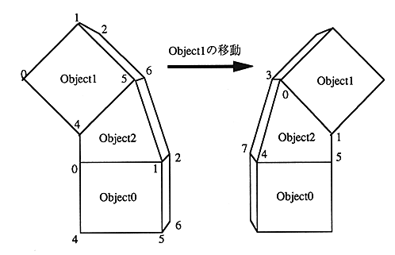
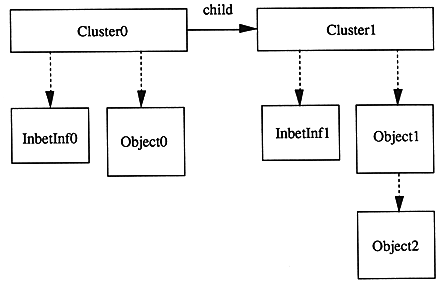

If you want to display Object2 deformed according to the movement of Object1 as shown below, Object2 which is a polygon between Object0 and Object1 By defining it as an object, you can automatically draw deformation.

Each table of cluster, object, and inter-object connection polygon information is connected as follows.
